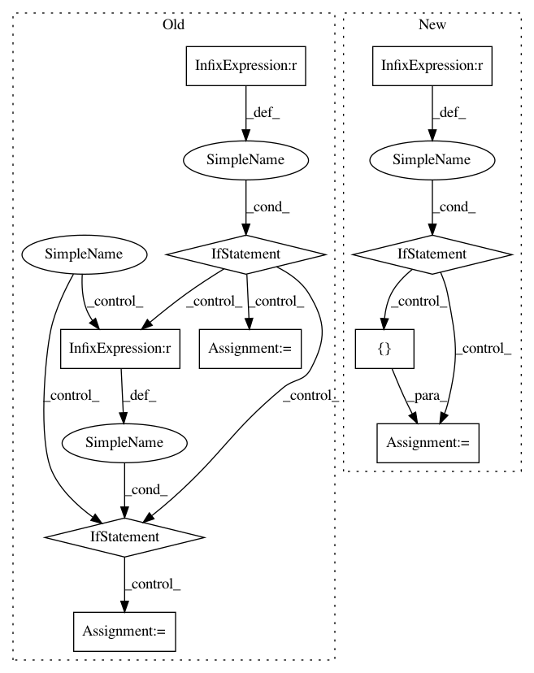

13aa31bc1a0b87d6c4b5e787c9b041ec83831c34,autokeras/blocks/reduction.py,SpatialReduction,build,#SpatialReduction#Any#Any#,106
Before Change
"global_max",
"global_avg"],
default="global_avg")
if reduction_type == "flatten":
output_node = Flatten().build(hp, output_node)
elif reduction_type == "global_max":
output_node = layer_utils.get_global_max_pooling(
output_node.shape)()(output_node)
elif reduction_type == "global_avg":
output_node = layer_utils.get_global_average_pooling(
output_node.shape)()(output_node)
return output_node
class TemporalReduction(block_module.Block):
After Change
if len(output_node.shape) <= 2:
return output_node
if self.reduction_type is None:
reduction_type = hp.Choice(
REDUCTION_TYPE, [FLATTEN, GLOBAL_MAX, GLOBAL_AVG])
with hp.conditional_scope(REDUCTION_TYPE, [reduction_type]):
return self._build_block(hp, output_node, reduction_type)
else:
return self._build_block(hp, output_node, self.reduction_type)
def _build_block(self, hp, output_node, reduction_type):
if reduction_type == FLATTEN:
output_node = Flatten().build(hp, output_node)
elif reduction_type == GLOBAL_MAX:
In pattern: SUPERPATTERN
Frequency: 3
Non-data size: 10
Instances
Project Name: keras-team/autokeras
Commit Name: 13aa31bc1a0b87d6c4b5e787c9b041ec83831c34
Time: 2020-07-31
Author: jin@tamu.edu
File Name: autokeras/blocks/reduction.py
Class Name: SpatialReduction
Method Name: build
Project Name: allenai/allennlp
Commit Name: 700abc65fd2172a2c6809dd9b72cf50fc2407772
Time: 2020-02-03
Author: mattg@allenai.org
File Name: allennlp/models/encoder_decoders/composed_seq2seq.py
Class Name: ComposedSeq2Seq
Method Name: __init__
Project Name: microsoft/nni
Commit Name: aa51e79cdbcbedbedeef68bcef646b2d43993753
Time: 2019-11-25
Author: Quanlu.Zhang@microsoft.com
File Name: src/sdk/pynni/nni/ppo_tuner/ppo_tuner.py
Class Name: PPOTuner
Method Name: _actions_to_config